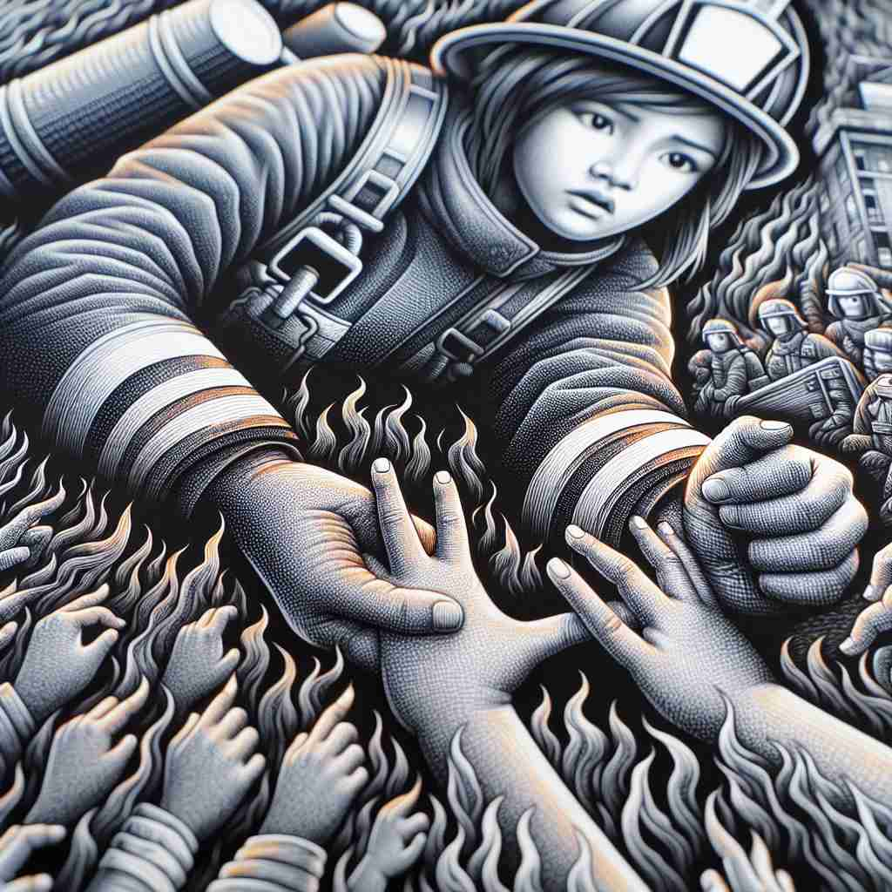

💬 The lifeguard is trying to save a life in the pool.

💬 You must save your work before the computer shuts down.
💬 The firefighter bravely went in to save the cat from the fire.

💬 The firefighter works hard to save a life in the fire.
🔈 [seɪv]
🗝️ v. to keep something safe or protected from harm, loss, or waste
🖼️ 在一个海滨度假场所，一位父亲正带着孩子在沙滩上玩耍。突然，一阵大浪袭来，父亲迅速将孩子抱起，保护他们免受海浪的侵袭。这展现了'save'作为保护某物免受伤害、损失或浪费的含义。
🔍 想象'save'是一个保护罩，能够保护各种东西免受伤害、损失或浪费。无论是保护生命、金钱、资源，还是数据、时间，甚至是在运动中保护球门，都可以用这个保护罩的概念来联想。这个核心意义贯穿了'save'的各种用法，帮助你更容易记住和理解它的多重含义。
💬 The lifeguard is trying to save a life in the pool.
💬 You must save your work before the computer shuts down.
💬 The firefighter bravely went in to save the cat from the fire.
💬 The firefighter works hard to save a life in the fire.
🌳 词根来自拉丁语 'salvare'，意为 '救' 或 '保护'。该词通常用作动词，表示 '保存' 或 '拯救'。
💡 记住 'save' 可以通过联想 '安全'（safe）进行记忆，因为 'save' 的本质是保护或使某物处于安全状态。
🗝️ v. to store for future use
🖼️ 在一个现代化的厨房里，主厨正在烹饪。他把多余的汤装进密封容器中，放进冰箱，说：“我们明天还可以使用这些。”这体现了'save'作为存储以便将来使用的含义。
💬 I saved some cake for you.
❓ 通过保护而留存
🗝️ v. to avoid wasting
🖼️ 在一个环保会议上，演讲者正在给观众展示如何节约水资源。他演示了使用节水龙头，减少不必要的浪费。这种场景展示了'save'作为避免浪费的含义。
💬 This new appliance will save energy.
❓ 保护资源不被浪费
🗝️ v. to accumulate money
🖼️ 在一个繁忙的银行柜台前，一位年轻的女性正在存入她的工资，她微笑着告诉柜员：“我正在为下一次旅行存钱。”这场景反映了'save'表示积累金钱的含义。
💬 She's saving for a new car.
❓ 保护金钱免于支出
🗝️ v. to prevent from being lost
🖼️ 在一个热闹的游乐园中，一个小男孩不小心把气球放飞了。一个快速反应的员工追上去，将气球抓住并还给了他。这个情境展示了'save'作为防止丢失的含义。
💬 Don't forget to save your work before closing the program.
❓ 保护数据不丢失
🗝️ v. to spare someone from something unpleasant
🖼️ 在一个忙碌的办公室里，经理注意到一位员工累了，便体贴地说：“你今天回去休息吧，我来完成剩下的工作。”这体现了'save'作为让某人免于不愉快事情的含义。
💬 The rain saved me from having to water the garden.
❓ 保护某人免受不愉快
🗝️ n. to score a goal in sports
🖼️ 在一场激烈的足球比赛中，守门员做出了一个精彩的扑救，挡住了对方的射门，赢得了观众的欢呼。这展示了'save'在体育运动中作为进球的含义。
💬 The goalkeeper made an incredible save.
❓ 保护球队免于失分